n8n en phrase simple
n8n est un outil d’automatisation visuelle. Il relie des services entre eux : formulaire, email, Slack, Notion, CRM, API, IA. Une action arrive, n8n la reçoit, applique une logique, puis déclenche la suite. C’est utile quand un client veut une automatisation visible, contrôlable et modifiable sans cacher tout le travail dans du code.
Ce que vous faites
Retenez une phrase courte : `n8n fait circuler une donnée entre plusieurs outils, avec des règles visibles.` Cette phrase suffit pour commencer. Si la définition devient trop technique, la pratique devient floue.
Tip terrain
Ne commencez pas par chercher le node parfait. Commencez par écrire le geste manuel que vous voulez supprimer.
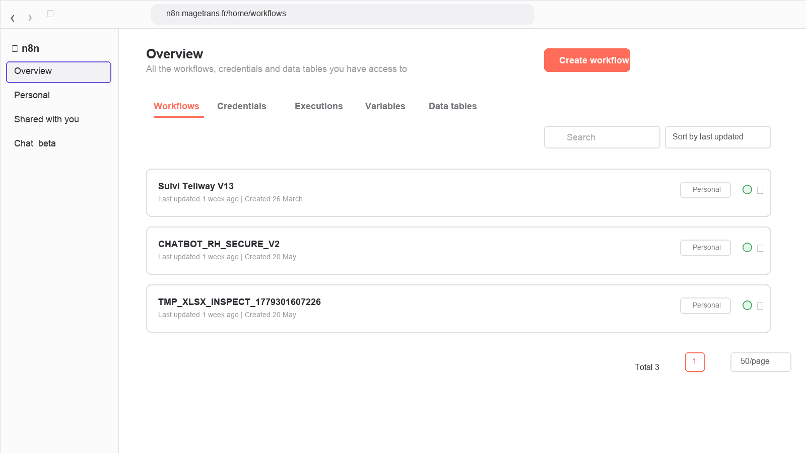
Comment vérifier
Vous savez expliquer la différence entre une discussion avec une IA et un workflow qui se déclenche tout seul.
n8n = trigger + nodes + données + executions
Objectif = automatiser une suite d’actions vérifiablesAutomatiser sans se perdre
Automatiser ne veut pas dire tout rendre automatique. Une bonne automatisation enlève une action répétitive, pas une décision importante. n8n reste un outil puissant, mais il peut vite devenir compliqué si le besoin n’est pas découpé. Le but de la séance est donc de comprendre le chemin : déclencheur, donnée, nodes, sortie, preuve.
Comment vérifier
Chaque étape du futur workflow a un niveau de risque : faible, moyen ou sensible.
Question à se poser
Est-ce que cette action peut partir sans relecture, ou doit-elle attendre votre accord ?
Automatique : ajouter une ligne dans une table
Semi-auto : préparer un email
Manuel : envoyer une offre commerciale sensible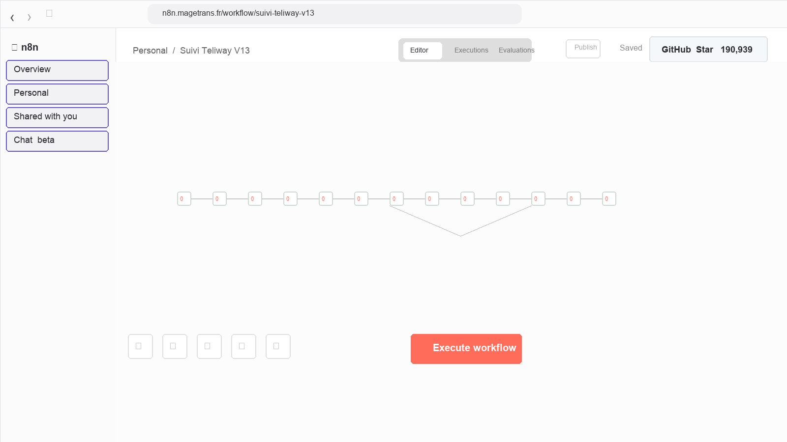
Tip terrain
Gardez une preuve avant de continuer : capture, execution, lien, JSON, message d’erreur ou commande copiée proprement.
Le fil rouge business
Toute la séance suit le même exemple. Le Comptoir Bleu reçoit une demande depuis un formulaire : nom, email, date, nombre de personnes et message libre. n8n doit nettoyer la donnée, vérifier les champs importants, préparer une réponse, notifier l’équipe et garder une trace. Ce cas simple permet de comprendre les bases sans partir dans tous les sens.
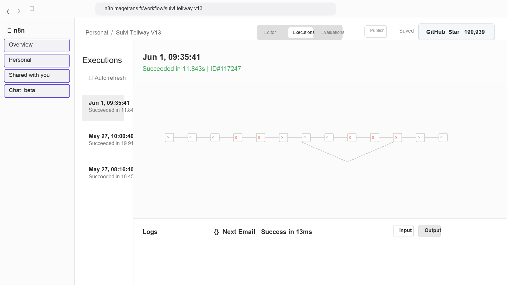
Ce que vous faites
Écrivez le scénario en une ligne : `Quand une demande arrive, n8n la vérifie, prépare une réponse, alerte l’équipe et l’enregistre.` Cette phrase devient la boussole de la séance.
Comment vérifier
Le scénario tient en une seule phrase et il produit un résultat concret.
Question à se poser
Si le workflow réussit, quelle trace doit rester visible dans votre outil de suivi ?
Tip terrain
Un bon fil rouge doit parler d’un vrai usage quotidien, pas d’une démo abstraite.
Déclencheur : formulaire ou webhook
Traitement : nettoyer et vérifier
Sortie : notification + trace + réponse préparée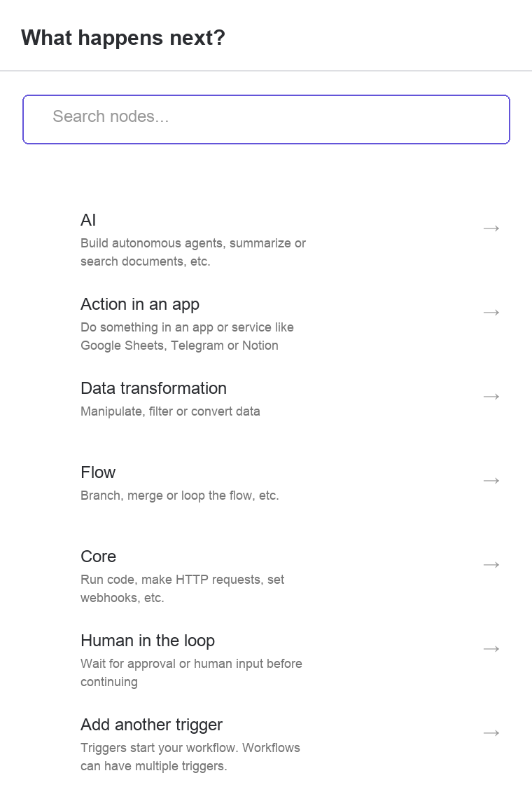
Workflow, node, trigger
Un workflow est le scénario complet. Un node est une étape du scénario. Un trigger est le node qui démarre tout. Si ces trois mots sont clairs, l’interface devient beaucoup plus facile à lire.
| Pourquoi | Un workflow est le scénario complet. Un node est une étape du scénario. Un trigger est le node qui démarre tout. Si ces trois mots sont clairs, l’interface devient beaucoup plus facile à lire. |
|---|---|
| Action | Dans le fil rouge, le workflow s’appelle `Lead - réception et réponse`. Le trigger reçoit la demande. Les nodes suivants nettoient, vérifient, appellent l’IA, notifient et enregistrent. |
| Vérification | Vous pouvez pointer chaque étape et dire si c’est un trigger, un node de logique, un node d’action ou un node IA. |
| Question | Où commence le workflow, et quelle est la première donnée reçue ? |
Workflow = histoire complète
Trigger = départ
Node = étape
Execution = preuve du passageLa donnée circule en JSON
n8n transporte des données sous forme de JSON. Dit simplement, le JSON est une façon de ranger des informations avec des noms de champs et des valeurs. Ce n’est pas juste du texte sur un écran. Un node reçoit des champs, les modifie, puis transmet une sortie. Comprendre ça évite de chercher une erreur au mauvais endroit.
Ce que vous faites
Quand un node se termine, ouvrez sa sortie et repérez les noms exacts des champs : `name`, `email`, `message`, `date`. Le node suivant doit utiliser ces noms exacts. Codex ou Claude Code peut aider à écrire le JSON, mais vous devez savoir le relire.
Comment vérifier
Vous savez retrouver un champ dans la sortie d’un node au lieu de l’inventer.
Question à se poser
Quel champ précis le node suivant doit-il lire ?
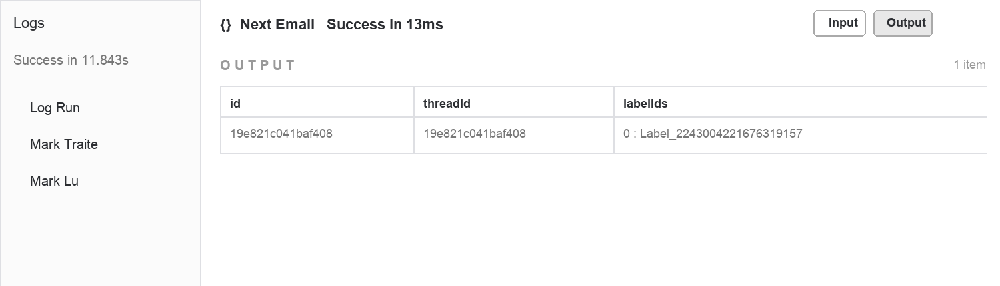
{{ $json.email }}
{{ $json.message }}
{{ $json.date }}Tip terrain
Si un champ est vide, ne corrigez pas le node final. Remontez au premier node où le champ disparaît.
Cloud ou self-hosted
n8n peut être utilisé en cloud ou hébergé soi-même. Le cloud simplifie le démarrage, les mises à jour et l’accès public aux webhooks. Le self-hosted donne plus de contrôle, mais demande plus de responsabilité technique : serveur, variables, sauvegardes, sécurité et mise à jour.
Ce que vous faites
Pour une première séance, partez sur l’idée simple : n8n Cloud pour apprendre vite, self-hosted quand l’équipe sait gérer l’infrastructure. Le choix technique ne doit pas bloquer la compréhension du workflow.
Tip terrain
Gardez une preuve avant de continuer : capture, execution, lien, JSON, message d’erreur ou commande copiée proprement.
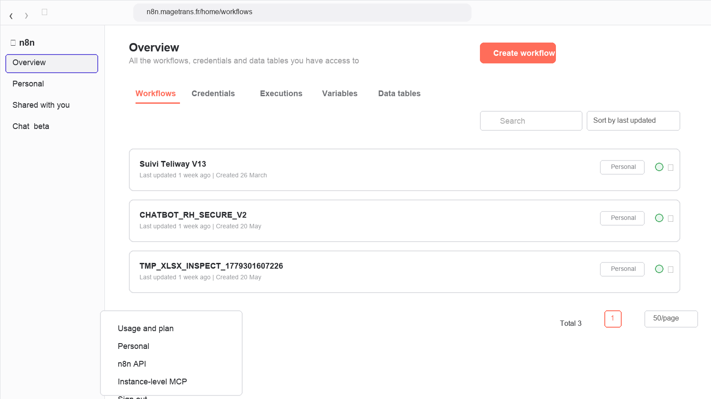
Comment vérifier
Vous savez pourquoi un webhook cloud est plus simple à tester qu’un n8n local non exposé à Internet.
Cloud = plus simple pour démarrer
Self-hosted = plus de contrôle, plus d’entretienCe que n8n ne décide pas
n8n applique des règles. Il ne connaît pas votre vraie priorité business si vous ne l’écrivez pas. Il ne sait pas non plus si une donnée est sensible, si un client doit être appelé avant un email, ou si un message doit attendre une validation.
Comment vérifier
Les limites sont visibles dans le workflow ou dans une note de documentation.
Question à se poser
Quelle action pourrait créer un problème si elle partait trop vite ?
Limite 1 : ne pas envoyer au client sans validation
Limite 2 : ne pas activer avant test complet
Limite 3 : ne jamais exposer les secrets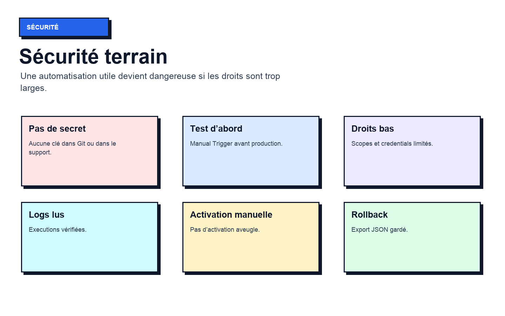
Tip terrain
Gardez une preuve avant de continuer : capture, execution, lien, JSON, message d’erreur ou commande copiée proprement.
API, node et MCP
Trois mots reviennent souvent. Un node est une brique n8n prête à configurer. Une API est une porte HTTP pour parler à un service. MCP est un protocole qui permet à un agent comme Claude Code ou Codex d’utiliser des outils de manière structurée.
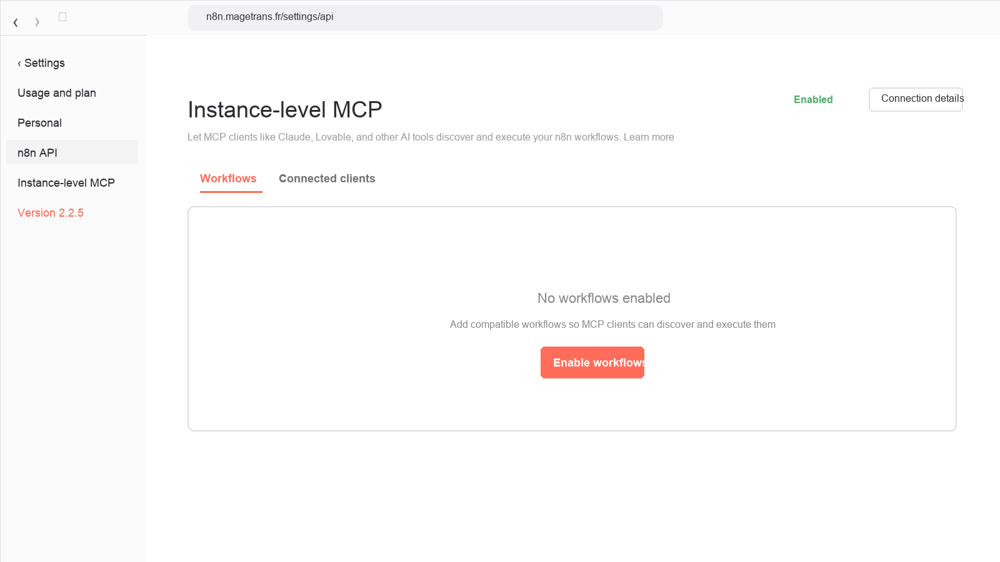
Ce que vous faites
Gardez cette règle : node quand l’intégration existe, HTTP Request quand il faut appeler une API, MCP quand un agent doit découvrir et utiliser des outils.
Comment vérifier
Vous savez choisir entre node prêt à l’emploi, HTTP Request et MCP sans mélanger les rôles.
Question à se poser
Est-ce que je connecte deux applications, ou est-ce que je donne un outil à un agent ?
Tip terrain
Gardez une preuve avant de continuer : capture, execution, lien, JSON, message d’erreur ou commande copiée proprement.
Node = brique n8n
API = appel HTTP
MCP = outil exposé à un agent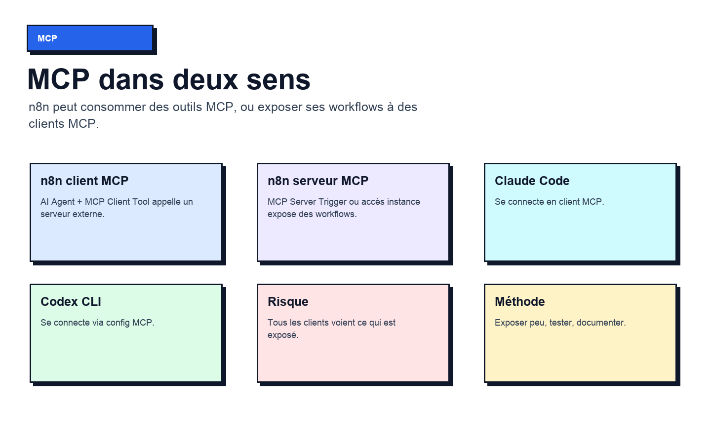
La place de Claude Code et Codex
Claude Code et Codex ne sont pas des nodes n8n classiques. On ne les met pas dans le canvas comme un simple bouton. Ils aident surtout à créer, relire et corriger la structure : workflow JSON, logique des nodes, scripts API, ou outils MCP. C’est le vrai centre de la séance.
| Pourquoi | Claude Code et Codex ne sont pas des nodes n8n classiques. On ne les met pas dans le canvas comme un simple bouton. Ils aident surtout à créer, relire et corriger la structure : workflow JSON, logique des nodes, scripts API, ou outils MCP. C’est le vrai centre de la séance. |
|---|---|
| Action | Retenez la phrase : `Claude Code et Codex ne remplacent pas la compréhension de n8n, ils accélèrent la construction quand le besoin est clair.` Ils peuvent créer, modifier, relire ou déclencher des workflows si les accès sont bien cadrés. |
| Vérification | Vous savez expliquer pourquoi `connecter Codex à n8n` peut vouloir dire API ou MCP selon le besoin. |
| Question | Est-ce que l’agent doit créer le workflow, ou seulement utiliser un workflow déjà prêt ? |
Créer un workflow = API n8n ou import JSON
Utiliser un workflow = MCP n8n exposé comme outilLa carte de la séance
La suite avance dans un ordre volontaire : comprendre, lire l’interface, construire un workflow, apprendre les nodes, ajouter l’IA, connecter MCP, connecter l’API, puis passer en routine de production. Cet ordre évite de commencer par les options les plus abstraites.
Ce que vous faites
Gardez la carte sous les yeux. Quand une notion devient floue, revenez au fil rouge : une demande arrive, n8n la transforme, l’équipe reçoit une alerte et la trace reste consultable.
Comment vérifier
Vous savez pourquoi chaque partie arrive avant la suivante.
Question à se poser
Quelle est la prochaine action visible, pas seulement la prochaine idée ?
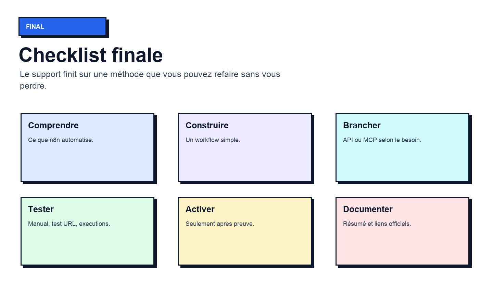
1. Comprendre
2. Construire
3. Connecter
4. Tester
5. ActiverTip terrain
Gardez une preuve avant de continuer : capture, execution, lien, JSON, message d’erreur ou commande copiée proprement.
Le tableau de bord
Le tableau de bord liste les workflows, leurs noms, leur état et parfois leur dossier ou projet. C’est là que l’on revient pour rouvrir, dupliquer ou contrôler une automatisation.
Ce que vous faites
Repérez le workflow de test et donnez-lui un nom lisible. Évitez `test 1`, `nouveau workflow`, `copie finale vraie finale`.
Tip terrain
Gardez une preuve avant de continuer : capture, execution, lien, JSON, message d’erreur ou commande copiée proprement.
Comment vérifier
Le nom explique le déclencheur et le résultat.
Lead - réception formulaire - notification interneL’éditeur visuel
L’éditeur est le canvas. Les nodes se placent à gauche, à droite, ou en branches. Les lignes montrent comment les données circulent. Une page propre rend le debug beaucoup plus simple.
Comment vérifier
Le parcours se lit sans zoomer ni deviner.
Question à se poser
Est-ce qu’une personne peut suivre le flux avec les yeux ?
Tip terrain
Gardez une preuve avant de continuer : capture, execution, lien, JSON, message d’erreur ou commande copiée proprement.
Le panneau des nodes
Le panneau des nodes sert à chercher une brique. Il contient des triggers, des actions, des nodes core, des nodes IA et parfois des intégrations installées. Il ne faut pas choisir le premier résultat sans lire son rôle.
Ce que vous faites
Cherchez `Webhook`, `Edit Fields`, `IF`, `HTTP Request`, `AI Agent`. Pour chaque node, notez s’il démarre, transforme, décide ou agit.
Comment vérifier
Vous savez ranger un node dans une famille simple.
Question à se poser
Est-ce que ce node déclenche, transforme, décide ou envoie ?
Tip terrain
Gardez une preuve avant de continuer : capture, execution, lien, JSON, message d’erreur ou commande copiée proprement.
Trigger
Core
App
AI
Tool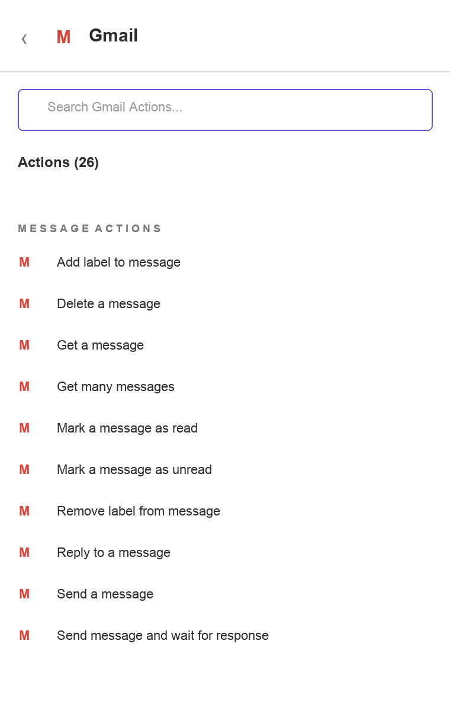
La fenêtre d’un node
Quand un node est ouvert, n8n montre ses paramètres. C’est souvent ici que l’erreur se cache : mauvaise méthode HTTP, mauvais champ, mauvais credential, mauvais format de sortie.
| Pourquoi | Quand un node est ouvert, n8n montre ses paramètres. C’est souvent ici que l’erreur se cache : mauvaise méthode HTTP, mauvais champ, mauvais credential, mauvais format de sortie. |
|---|---|
| Action | Ouvrez un node et lisez les paramètres avant de les modifier. Notez la méthode, l’URL, le credential, les champs d’entrée et la sortie attendue. |
| Vérification | Vous pouvez expliquer ce que le node doit recevoir et produire. |
| Question | Quel est le contrat de ce node : entrée, action, sortie ? |
Les credentials
Les credentials gardent les accès aux services : API key, OAuth, token, compte Gmail, Slack, Notion. Un workflow sérieux ne colle pas les secrets dans un champ texte visible.
Ce que vous faites
Créez les credentials dans n8n, puis sélectionnez-les dans le node. Pour un support public ou un dépôt Git, ne montrez jamais la valeur d’une clé.
Comment vérifier
La clé n’apparaît ni dans le HTML, ni dans le JSON partagé, ni dans une capture.
Question à se poser
Si cette capture part sur GitHub, est-ce qu’un secret fuit ?
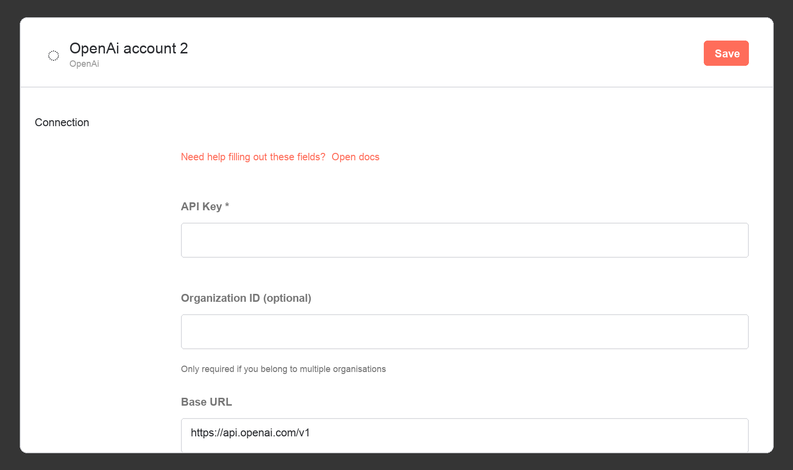
Tip terrain
Gardez une preuve avant de continuer : capture, execution, lien, JSON, message d’erreur ou commande copiée proprement.
Les executions
Une execution est la preuve qu’un workflow a tourné. Elle montre chaque node, les données d’entrée, les sorties et les erreurs. Pour apprendre n8n, c’est plus important que le canvas joli.
Ce que vous faites
Après chaque test, ouvrez l’execution. Repérez le premier node rouge, pas le dernier effet visible. L’erreur se corrige là où elle apparaît d’abord.
Tip terrain
Gardez une preuve avant de continuer : capture, execution, lien, JSON, message d’erreur ou commande copiée proprement.
Comment vérifier
Vous savez retrouver la cause d’un échec en partant de l’execution.
Erreur 401 = souvent credential/header
Erreur 404 = souvent URL
Erreur champ vide = souvent mappingActiver un workflow
Un workflow actif peut tourner sans vous. C’est pratique, mais cela demande plus de contrôle. Une automatisation non testée peut envoyer des messages, créer des lignes ou appeler des APIs avec de mauvaises données.
Comment vérifier
L’activation arrive après une execution réussie, pas avant.
Question à se poser
Est-ce que je serais à l’aise si ce workflow tournait demain matin sans moi ?
Tip terrain
Gardez une preuve avant de continuer : capture, execution, lien, JSON, message d’erreur ou commande copiée proprement.
Manual Trigger pour apprendre
Le Manual Trigger est idéal pour apprendre. Il permet de lancer un workflow à la demande, sans attendre un vrai formulaire ou un vrai événement. Cela évite de mélanger apprentissage et production.
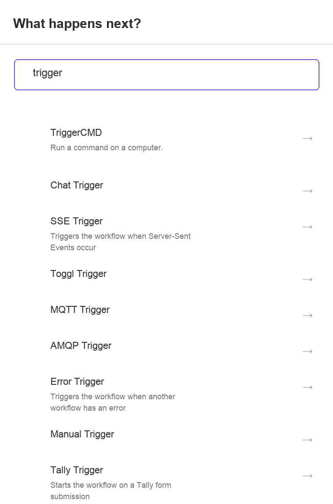
Ce que vous faites
Ajoutez un Manual Trigger dans les workflows de test. Injectez une donnée simple dans un Set/Edit Fields pour simuler une demande client.
Comment vérifier
Le workflow peut se tester sans vraie donnée externe.
Question à se poser
Est-ce que je peux reproduire le test en deux clics ?
Tip terrain
Gardez une preuve avant de continuer : capture, execution, lien, JSON, message d’erreur ou commande copiée proprement.
Manual Trigger
Edit Fields
Test workflow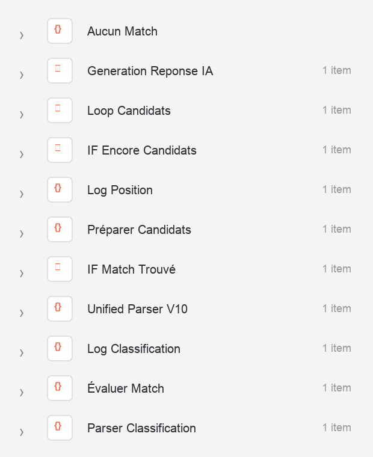
Notes et organisation
Les notes sur le canvas ne sont pas décoratives. Elles expliquent pourquoi une branche existe, ce qui est volontairement bloqué, et ce qu’il faut vérifier avant activation. Une bonne note évite une confusion plus tard.
| Pourquoi | Les notes sur le canvas ne sont pas décoratives. Elles expliquent pourquoi une branche existe, ce qui est volontairement bloqué, et ce qu’il faut vérifier avant activation. Une bonne note évite une confusion plus tard. |
|---|---|
| Action | Ajoutez une note courte au début du workflow : objectif, source, sortie, limites. Une phrase suffit. |
| Vérification | Le workflow raconte son but sans ouvrir la vidéo ou la conversation. |
| Question | Quelle information sera oubliée dans une semaine si elle n’est pas écrite ? |
Premier tour d’interface
Avant de construire le vrai flux, faites un tour simple : dashboard, canvas, panneau nodes, credentials, execution, activation. Ce tour crée des repères. Sans repère, chaque erreur ressemble à un gros problème.
Ce que vous faites
Ouvrez chaque zone une fois. Le but n’est pas de tout paramétrer. Le but est de savoir où revenir quand le workflow se bloque.
Comment vérifier
Vous savez où créer, tester, lire l’erreur, gérer les secrets et activer.
Question à se poser
Si un node échoue, où allez-vous regarder en premier ?
Tip terrain
Gardez une preuve avant de continuer : capture, execution, lien, JSON, message d’erreur ou commande copiée proprement.
Le formulaire de départ
Le workflow commence avec une demande client. Le plus simple est d’imaginer un formulaire : nom, email, date, nombre de personnes, message. Cette donnée représente le vrai travail à automatiser.
Ce que vous faites
Créez une donnée de test avec ces champs. Si vous utilisez un vrai formulaire, commencez avec une version test.
Tip terrain
Gardez une preuve avant de continuer : capture, execution, lien, JSON, message d’erreur ou commande copiée proprement.
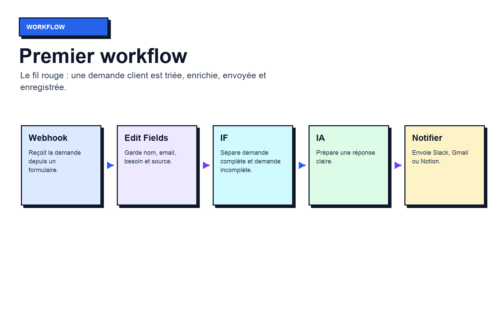
Comment vérifier
La donnée contient assez d’informations pour traiter le besoin.
{"name":"Camille","email":"camille@example.com","date":"vendredi","people":6}Webhook pour recevoir
Le Webhook permet à un service externe d’envoyer une donnée à n8n. Il est utile pour formulaires, landing pages, CRM, outils no-code ou scripts. Le webhook est une porte d’entrée.
Comment vérifier
L’execution montre que n8n reçoit bien le payload.
Question à se poser
Est-ce que la donnée arrive vraiment, ou est-ce que je regarde seulement l’URL ?
POST https://votre-n8n/webhook-test/lead-comptoir-bleuTip terrain
Gardez une preuve avant de continuer : capture, execution, lien, JSON, message d’erreur ou commande copiée proprement.
Nettoyer avec Edit Fields
Une demande brute contient souvent trop de champs. Edit Fields permet de garder seulement ce qui sert. C’est une étape simple mais très importante : un workflow propre commence avec une donnée propre.
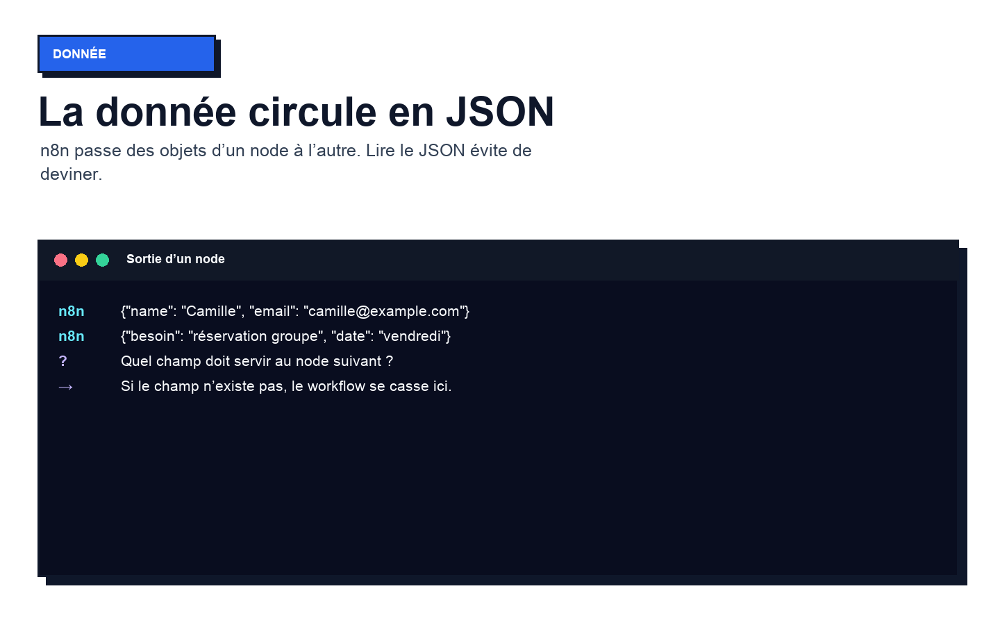
Ce que vous faites
Gardez `name`, `email`, `date`, `people`, `message`, `source`. Renommez les champs si les noms sont trop techniques.
Comment vérifier
La sortie du node est plus courte et lisible.
Question à se poser
Quels champs sont vraiment utiles pour la suite ?
Tip terrain
Gardez une preuve avant de continuer : capture, execution, lien, JSON, message d’erreur ou commande copiée proprement.
name
email
date
people
message
source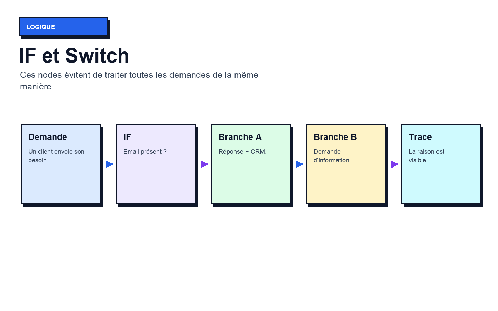
Vérifier les informations avec IF
Le node IF sépare les cas. Exemple : si l’email est présent, on prépare une réponse. Si l’email manque, on alerte l’équipe pour compléter. Cette logique évite d’envoyer une mauvaise réponse.
| Pourquoi | Le node IF sépare les cas. Exemple : si l’email est présent, on prépare une réponse. Si l’email manque, on alerte l’équipe pour compléter. Cette logique évite d’envoyer une mauvaise réponse. |
|---|---|
| Action | Ajoutez une condition : email existe et date existe. Branche vraie : suite normale. Branche fausse : notification interne. |
| Vérification | Une donnée complète prend la bonne branche, une donnée incomplète prend l’autre. |
| Question | Quelle information bloque vraiment la suite ? |
Préparer une réponse simple
Avant d’envoyer quoi que ce soit, préparez un message. L’IA peut aider, mais elle doit recevoir un contexte clair : style simple, pas de promesse inventée, demande de confirmation, message court.
Ce que vous faites
Ajoutez un node IA ou un bloc de texte qui génère un brouillon. Au début, gardez l’envoi manuel ou interne.
Comment vérifier
Le message préparé est lisible et ne promet rien qui n’existe pas.
Question à se poser
Est-ce que ce message peut être relu par une personne avant envoi ?
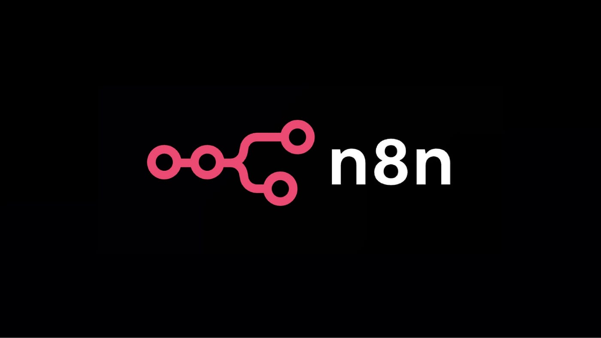
Rédige une réponse courte.
Ne confirme pas la réservation.
Demande les informations manquantes si besoin.Tip terrain
Gardez une preuve avant de continuer : capture, execution, lien, JSON, message d’erreur ou commande copiée proprement.
Notifier l’équipe
Une notification sert à ne pas perdre la demande. Slack, email ou Notion peuvent faire l’affaire. Le choix dépend de l’outil que l’équipe ouvre vraiment. Une notification dans un outil jamais consulté ne sert à rien.
Ce que vous faites
Choisissez un seul canal pour le test. Envoyez nom, besoin, date, lien vers l’execution et brouillon de réponse.
Tip terrain
Gardez une preuve avant de continuer : capture, execution, lien, JSON, message d’erreur ou commande copiée proprement.
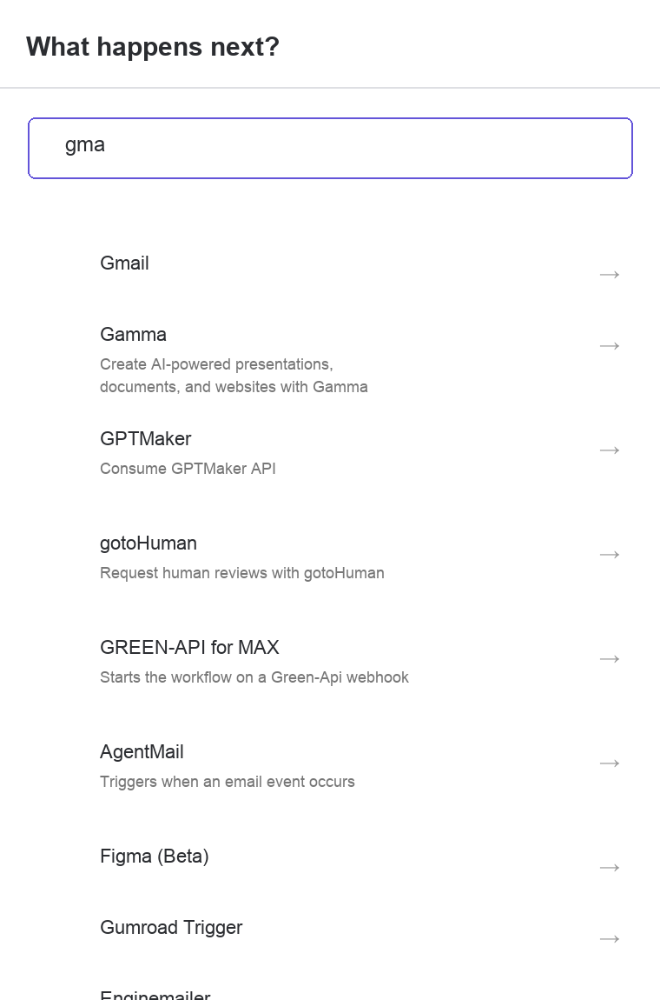
Comment vérifier
La notification donne assez d’informations pour agir sans rouvrir tout n8n.
Garder une trace
La trace évite de perdre l’historique. Elle peut aller dans Notion, Google Sheets, Airtable, CRM ou une base n8n. La trace sert aussi à vérifier que le workflow a bien fait son travail.
Comment vérifier
Chaque demande test crée une trace unique.
Question à se poser
Si le client rappelle demain, où retrouverez-vous la demande ?
status = nouveau
source = formulaire
execution_url = ...Tip terrain
Gardez une preuve avant de continuer : capture, execution, lien, JSON, message d’erreur ou commande copiée proprement.
Tester avec deux cas
Un seul test ne suffit pas. Il faut tester au moins deux cas : demande complète et demande incomplète. Sinon, vous ne savez pas si la branche IF fonctionne.
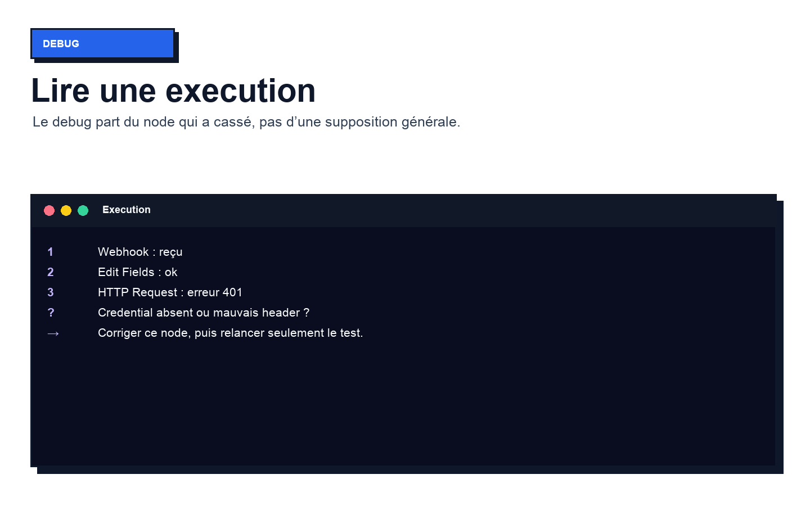
Ce que vous faites
Lancez un test complet avec email et date, puis un test sans email. Notez la branche prise par chaque execution.
Comment vérifier
Les deux branches passent exactement comme prévu.
Question à se poser
Est-ce que le workflow sait gérer le cas imparfait ?
Tip terrain
Gardez une preuve avant de continuer : capture, execution, lien, JSON, message d’erreur ou commande copiée proprement.
Faire une première version lisible
La première version ne doit pas être parfaite. Elle doit être lisible, testable et facile à corriger. Une automatisation trop ambitieuse dès le départ devient dure à débugger.
| Pourquoi | La première version ne doit pas être parfaite. Elle doit être lisible, testable et facile à corriger. Une automatisation trop ambitieuse dès le départ devient dure à débugger. |
|---|---|
| Action | Limitez la version 1 à cinq étapes : recevoir, nettoyer, vérifier, notifier, tracer. L’IA peut rester en brouillon au début. |
| Vérification | La version 1 fonctionne sans action risquée. |
| Question | Est-ce que ce workflow tient encore dans votre tête ? |
Résumé du workflow 1
À ce stade, le fil rouge existe. Il ne fait pas encore tout, mais il montre la logique : un événement arrive, la donnée est propre, une règle décide, une notification part et une trace reste.
Ce que vous faites
Écrivez un résumé en cinq lignes dans une note du workflow. Ce résumé devient votre documentation de départ.
Comment vérifier
Quelqu’un peut comprendre le workflow sans vous demander une explication orale.
Question à se poser
Quelle phrase résume le résultat obtenu ?
Tip terrain
Gardez une preuve avant de continuer : capture, execution, lien, JSON, message d’erreur ou commande copiée proprement.
Trigger nodes
Les triggers démarrent un workflow. Sans trigger, rien ne part. Manual, Webhook, Schedule, Form et App Trigger ne répondent pas au même besoin.
Ce que vous faites
Choisissez le trigger selon l’événement réel : clic manuel, donnée entrante, heure fixe, formulaire ou événement d’une app.
Tip terrain
Gardez une preuve avant de continuer : capture, execution, lien, JSON, message d’erreur ou commande copiée proprement.
Comment vérifier
Le trigger correspond au moment réel où le workflow doit démarrer.
Action nodes
Les action nodes font quelque chose dans un outil : envoyer un email, créer une page, poster sur Slack, ajouter une ligne, mettre à jour un CRM. C’est souvent la partie visible du workflow.
Comment vérifier
L’action produit un résultat visible dans l’outil cible.
Question à se poser
Quel résultat externe doit exister après ce node ?
Tip terrain
Gardez une preuve avant de continuer : capture, execution, lien, JSON, message d’erreur ou commande copiée proprement.
Core nodes
Les core nodes manipulent la logique interne : IF, Switch, Merge, Code, Set/Edit Fields, Wait, Split, Loop. Ils rendent le workflow fiable avant les actions externes.
Ce que vous faites
Utilisez un core node pour préparer la donnée avant d’appeler un outil. Cela rend l’erreur plus facile à lire.
Comment vérifier
La donnée sort du core node dans le format attendu.
Question à se poser
Est-ce que la donnée est prête avant de sortir de n8n ?
Tip terrain
Gardez une preuve avant de continuer : capture, execution, lien, JSON, message d’erreur ou commande copiée proprement.
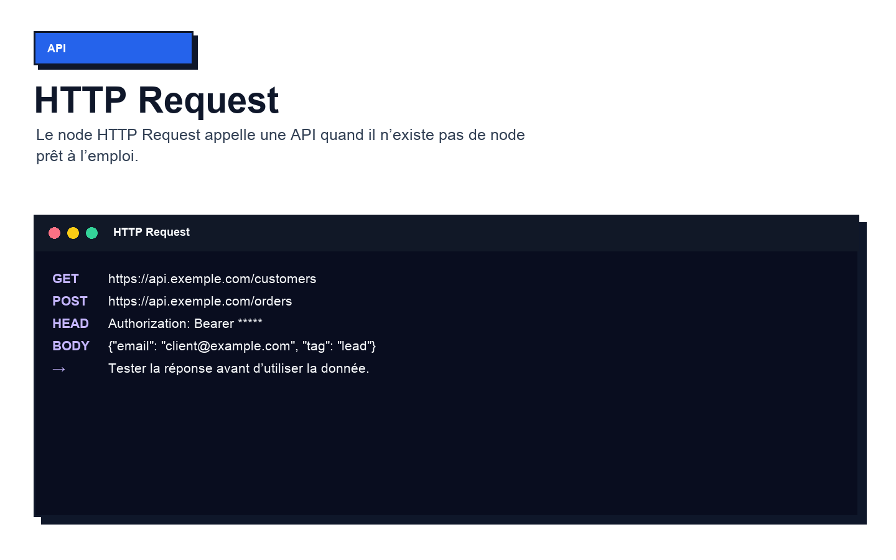
HTTP Request
HTTP Request est le node universel pour appeler une API. Il est utile quand n8n n’a pas de node dédié ou quand l’intégration officielle ne couvre pas votre cas.
| Pourquoi | HTTP Request est le node universel pour appeler une API. Il est utile quand n8n n’a pas de node dédié ou quand l’intégration officielle ne couvre pas votre cas. |
|---|---|
| Action | Paramétrez méthode, URL, headers, body et authentication. Testez la réponse avec peu de données. |
| Vérification | Le status code, le body et les erreurs sont compris. |
| Question | Est-ce que je connais la méthode, l’URL et le header attendu ? |
GET = lire
POST = créer
PUT/PATCH = modifier
DELETE = supprimer avec prudenceCode node
Le Code node permet d’écrire du JavaScript quand les nodes visuels ne suffisent pas. Il est utile, mais il peut rendre le workflow plus difficile à maintenir si on l’utilise trop vite.
Ce que vous faites
Utilisez Code pour une transformation précise : nettoyer un texte, convertir une date, créer un champ calculé. Évitez de cacher toute la logique dans du code.
Comment vérifier
Le code est court et son résultat est visible dans la sortie.
Question à se poser
Est-ce que cette logique mérite du code, ou un node visuel suffit ?
return items.map(item => ({ json: { ...item.json, source: 'formulaire' } }));Tip terrain
Gardez une preuve avant de continuer : capture, execution, lien, JSON, message d’erreur ou commande copiée proprement.
IF et Switch
IF décide entre deux branches. Switch choisit entre plusieurs routes. Ils sont utiles pour séparer les demandes urgentes, incomplètes, commerciales ou techniques.
Ce que vous faites
Dans le fil rouge, ajoutez un Switch sur le type de demande si le message contient réservation, événement, recrutement ou autre.
Tip terrain
Gardez une preuve avant de continuer : capture, execution, lien, JSON, message d’erreur ou commande copiée proprement.
Comment vérifier
Chaque route reçoit seulement les demandes qui la concernent.
Merge
Merge sert à réunir deux branches ou deux sources de données. Par exemple : demande du formulaire + fiche client du CRM. Sans Merge, les informations restent séparées.
Comment vérifier
La sortie contient les informations des deux côtés.
Question à se poser
Quelles deux sources doivent se rejoindre ?
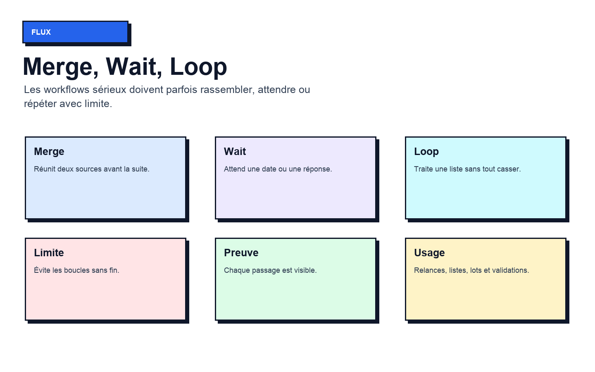
Tip terrain
Gardez une preuve avant de continuer : capture, execution, lien, JSON, message d’erreur ou commande copiée proprement.
Wait et Loop
Wait permet d’attendre. Loop traite une liste étape par étape. Ces nodes sont utiles pour relances, lots, listes de clients ou temporisations. Ils doivent être contrôlés pour éviter les boucles trop longues.
Ce que vous faites
Ajoutez Wait pour une relance test ou Loop pour traiter plusieurs lignes. Fixez une limite claire.
Comment vérifier
Le workflow ne boucle pas sans fin et ne spamme pas les outils externes.
Question à se poser
Quelle limite protège ce workflow ?
Tip terrain
Gardez une preuve avant de continuer : capture, execution, lien, JSON, message d’erreur ou commande copiée proprement.
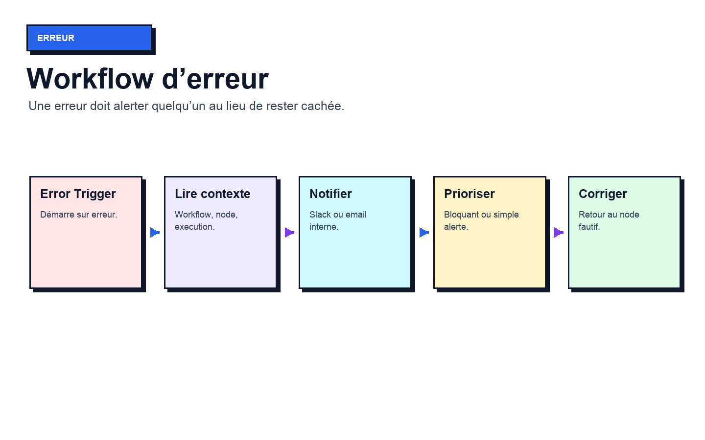
Error Trigger
Un workflow peut échouer. Error Trigger démarre un flux de gestion d’erreur. C’est une vraie pratique de production : l’erreur devient visible au lieu de rester cachée.
| Pourquoi | Un workflow peut échouer. Error Trigger démarre un flux de gestion d’erreur. C’est une vraie pratique de production : l’erreur devient visible au lieu de rester cachée. |
|---|---|
| Action | Créez un workflow d’erreur qui notifie le nom du workflow, le node fautif, le message et le lien d’execution. |
| Vérification | Une erreur volontaire déclenche une alerte utile. |
| Question | Qui doit être prévenu quand le workflow casse ? |
Sous-workflows
Un sous-workflow évite de répéter la même logique partout. Par exemple, formater une notification ou vérifier une adresse email peut devenir une brique réutilisable.
Ce que vous faites
Attendez d’avoir répété une logique deux ou trois fois avant de la sortir en sous-workflow. Ne créez pas une abstraction trop tôt.
Comment vérifier
Le sous-workflow a une entrée claire et une sortie claire.
Question à se poser
Est-ce une vraie répétition ou juste une idée de rangement ?
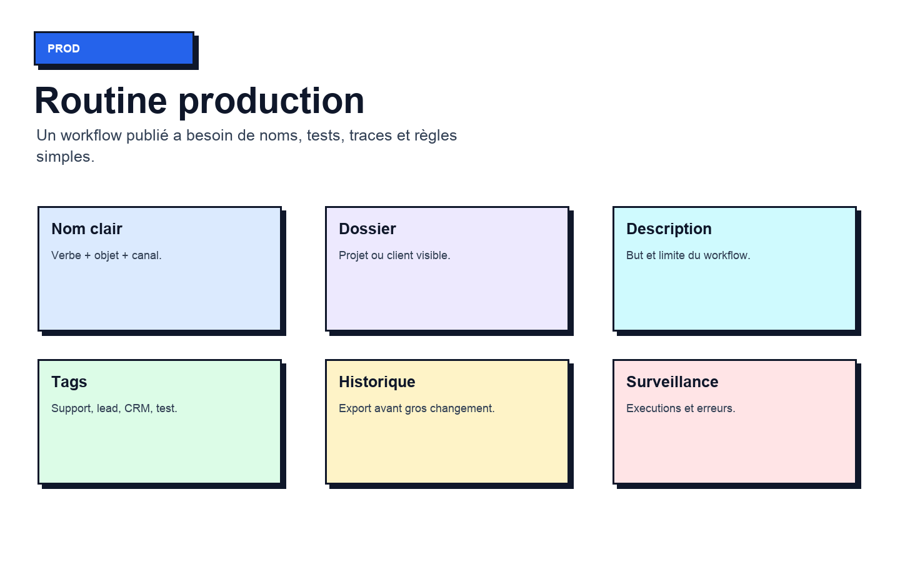
Tip terrain
Gardez une preuve avant de continuer : capture, execution, lien, JSON, message d’erreur ou commande copiée proprement.
OpenAI et Anthropic dans n8n
n8n peut appeler des modèles via des nodes IA ou HTTP Request. C’est différent de Codex ou Claude Code. Ici, n8n parle à une API de modèle pour produire un texte, classer une demande ou extraire une information.
Ce que vous faites
Utilisez un credential dédié pour OpenAI ou Anthropic. Le prompt doit être court, précis, et relié aux champs du workflow.
Tip terrain
Gardez une preuve avant de continuer : capture, execution, lien, JSON, message d’erreur ou commande copiée proprement.
Comment vérifier
La réponse du modèle est utilisée comme une donnée, pas comme une vérité automatique.
AI Agent node
L’AI Agent node peut raisonner et utiliser des outils. Il ne sert pas seulement à générer du texte. Il peut choisir un outil, appeler une API, récupérer une information et produire une sortie.
Comment vérifier
L’agent sait quels outils il peut utiliser et pourquoi.
Question à se poser
Est-ce qu’un agent est nécessaire, ou un simple node de modèle suffit ?
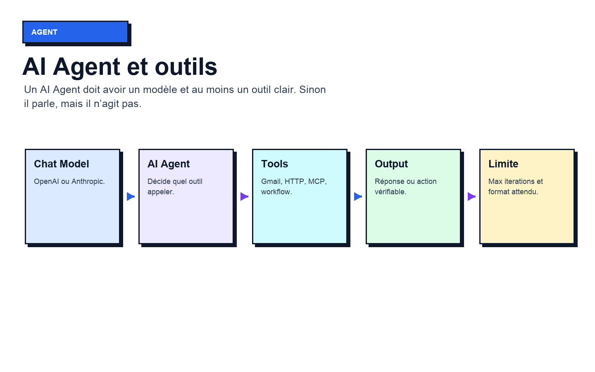
Tip terrain
Gardez une preuve avant de continuer : capture, execution, lien, JSON, message d’erreur ou commande copiée proprement.
Tools d’un agent
Un agent sans outil parle. Un agent avec outils agit. Dans n8n, les tools peuvent être des requêtes, des workflows, des services ou un MCP Client Tool. Plus les outils sont larges, plus le risque monte.
Ce que vous faites
Donnez à l’agent un petit nombre d’outils. Chaque outil doit avoir un nom clair et une description simple.
Comment vérifier
L’agent n’a pas accès à des actions hors sujet.
Question à se poser
Quel outil exact l’agent doit-il avoir pour faire son travail ?
Tip terrain
Gardez une preuve avant de continuer : capture, execution, lien, JSON, message d’erreur ou commande copiée proprement.
Prompt court et utile
Un prompt n8n doit guider une tâche précise. Un prompt trop long peut mélanger les priorités. Un prompt trop vague produit une réponse difficile à vérifier.
| Pourquoi | Un prompt n8n doit guider une tâche précise. Un prompt trop long peut mélanger les priorités. Un prompt trop vague produit une réponse difficile à vérifier. |
|---|---|
| Action | Dans le fil rouge, demandez : `Classe la demande en réservation, événement, question ou autre. Réponds seulement avec un JSON.` |
| Vérification | La sortie est courte et facile à utiliser par le node suivant. |
| Question | Est-ce que la sortie peut être lue par un workflow, pas seulement par une personne ? |
{"type":"reservation","priority":"normal","missing":["phone"]}Sortie structurée
La sortie structurée évite les textes imprévisibles. Un JSON propre permet à IF, Switch ou HTTP Request d’utiliser la réponse. C’est souvent la différence entre une démo jolie et un workflow fiable.
Ce que vous faites
Demandez un format JSON simple avec trois champs maximum au début. Validez que le JSON se parse correctement.
Comment vérifier
Le node suivant peut lire la réponse sans interprétation humaine.
Question à se poser
Quels champs exacts doivent sortir de l’IA ?
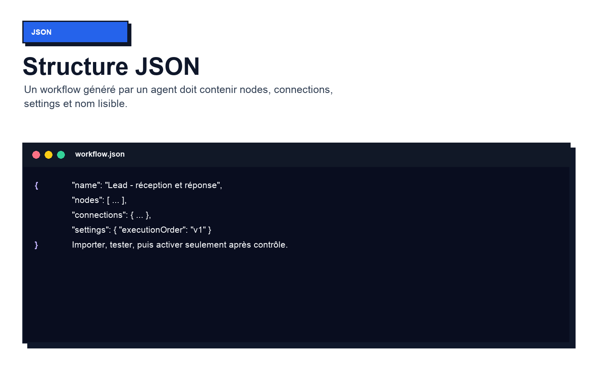
Tip terrain
Gardez une preuve avant de continuer : capture, execution, lien, JSON, message d’erreur ou commande copiée proprement.
Validation humaine
Une IA peut préparer une réponse sans l’envoyer. Cette étape respecte le niveau débutant et le niveau production. On garde le contrôle tant que le workflow n’a pas fait ses preuves.
Ce que vous faites
Envoyez le brouillon en interne avec un lien d’execution. Le message final part seulement après validation humaine.
Tip terrain
Gardez une preuve avant de continuer : capture, execution, lien, JSON, message d’erreur ou commande copiée proprement.
Comment vérifier
Aucun client ne reçoit un texte non relu pendant les premiers tests.
Permissions des tools
Un outil donné à un agent doit être limité. Si l’agent peut lire, écrire, supprimer et activer partout, l’automatisation devient trop risquée. Le bon design donne juste l’outil nécessaire.
Comment vérifier
Chaque outil dit clairement ce qu’il peut faire.
Question à se poser
Est-ce que ce nom d’outil cache une action trop large ?
Tip terrain
Gardez une preuve avant de continuer : capture, execution, lien, JSON, message d’erreur ou commande copiée proprement.
L’IA vérifie la donnée
L’IA peut aider à repérer un message incomplet ou une intention. Mais la règle finale doit rester testable. Par exemple, vérifier qu’un email existe ne demande pas d’IA. Comprendre un message libre peut demander l’IA.
Ce que vous faites
Utilisez des règles simples avant l’IA, puis l’IA seulement pour le texte libre.
Comment vérifier
Les vérifications simples ne coûtent pas d’appel modèle inutile.
Question à se poser
Est-ce une règle mécanique ou une compréhension de texte ?
Tip terrain
Gardez une preuve avant de continuer : capture, execution, lien, JSON, message d’erreur ou commande copiée proprement.
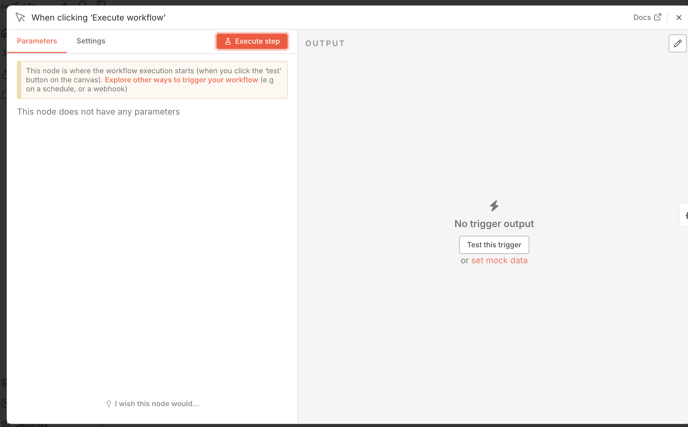
Éviter l’invention
Une IA peut inventer un horaire, un prix ou une promesse si le prompt la laisse faire. Dans un workflow business, cette erreur peut devenir visible par un client.
| Pourquoi | Une IA peut inventer un horaire, un prix ou une promesse si le prompt la laisse faire. Dans un workflow business, cette erreur peut devenir visible par un client. |
|---|---|
| Action | Ajoutez une consigne : ne pas inventer, demander les informations manquantes, utiliser uniquement les champs fournis. |
| Vérification | Le brouillon ne contient pas de donnée absente du formulaire. |
| Question | Quelle information l’IA n’a pas le droit d’inventer ? |
N’invente pas de disponibilité.
Ne confirme pas une réservation.
Demande une validation interne.IA prête pour MCP/API
Une fois que l’IA est cadrée dans n8n, on peut parler de MCP et d’API. Sinon, connecter Codex ou Claude Code à un workflow mal compris ne fait qu’accélérer la confusion.
Ce que vous faites
Gardez le workflow simple et testé avant d’ajouter des agents externes. Le MCP ou l’API doit servir un besoin clair.
Comment vérifier
Le workflow de base tourne sans MCP ni API complexe.
Question à se poser
Est-ce que j’ajoute une connexion parce qu’elle sert, ou parce qu’elle paraît avancée ?
Tip terrain
Gardez une preuve avant de continuer : capture, execution, lien, JSON, message d’erreur ou commande copiée proprement.
MCP en mots simples
MCP signifie Model Context Protocol. Dans cette séance, retenez simplement : un agent peut découvrir des outils, lire leur description et les appeler proprement. C’est plus cadré que coller une clé API dans une conversation.
Ce que vous faites
Écrivez la définition : `MCP donne des outils contrôlés à un agent.` Puis notez quel outil n8n doit exposer ou consommer.
Tip terrain
Gardez une preuve avant de continuer : capture, execution, lien, JSON, message d’erreur ou commande copiée proprement.
Comment vérifier
Vous savez dire ce que MCP apporte par rapport à une simple clé API.
n8n serveur MCP instance
La documentation n8n explique que l’instance peut exposer des workflows à des clients MCP quand la fonctionnalité est activée. Cela permet à un client comme Claude Code ou Codex d’interagir avec les workflows disponibles.
Comment vérifier
Le client MCP voit uniquement des outils utiles et compréhensibles.
Question à se poser
Si le client liste les outils, les noms sont-ils assez clairs ?
Tip terrain
Gardez une preuve avant de continuer : capture, execution, lien, JSON, message d’erreur ou commande copiée proprement.
MCP Server Trigger
Le MCP Server Trigger expose un workflow comme serveur MCP. C’est utile quand vous voulez transformer un workflow n8n en outil appelable par un agent. Le workflow démarre quand l’outil MCP est appelé.
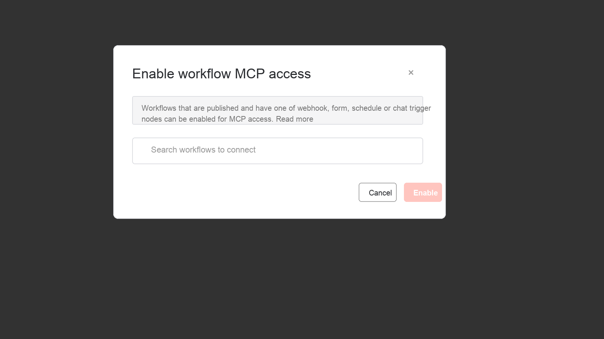
Ce que vous faites
Créez un workflow dédié, ajoutez MCP Server Trigger, décrivez l’outil, choisissez l’authentification et testez l’URL de test avant la production.
Comment vérifier
L’outil apparaît côté client et déclenche une execution côté n8n.
Question à se poser
Qu’est-ce que cet outil a le droit de faire exactement ?
Tip terrain
Gardez une preuve avant de continuer : capture, execution, lien, JSON, message d’erreur ou commande copiée proprement.
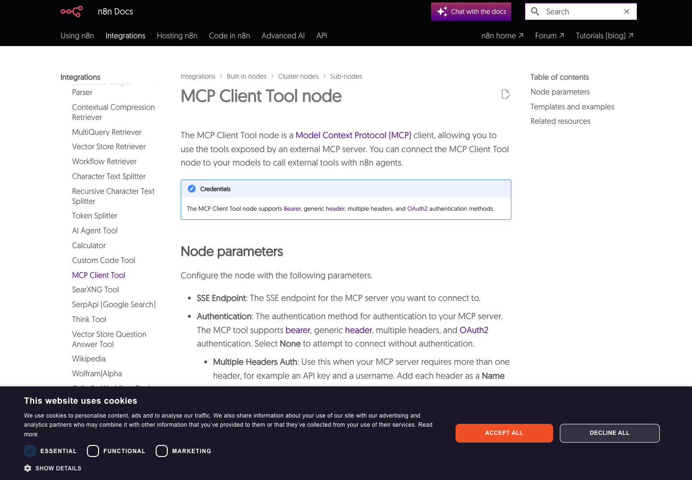
MCP Client Tool
Le MCP Client Tool fait l’inverse : n8n devient client d’un serveur MCP externe. Un AI Agent dans n8n peut utiliser des outils publiés par ce serveur.
| Pourquoi | Le MCP Client Tool fait l’inverse : n8n devient client d’un serveur MCP externe. Un AI Agent dans n8n peut utiliser des outils publiés par ce serveur. |
|---|---|
| Action | Dans un AI Agent, ajoutez MCP Client Tool, configurez l’endpoint SSE ou HTTP, l’authentification, puis limitez les outils inclus. |
| Vérification | L’agent appelle un outil externe et la réponse revient dans n8n. |
| Question | Est-ce que n8n doit exposer un outil, ou consommer un outil externe ? |
Claude Code comme client MCP
Claude Code peut se connecter à des serveurs MCP. Cela permet de lui donner un outil n8n contrôlé au lieu de lui demander d’improviser un accès. Dans cette séance, Claude Code devient client, n8n devient serveur.
Ce que vous faites
Ajoutez le serveur MCP n8n avec la commande Claude Code adaptée à l’URL et à l’authentification. Vérifiez ensuite la liste des serveurs.
Comment vérifier
Claude Code voit le serveur n8n dans `/mcp` ou dans la liste MCP.
Question à se poser
Est-ce que Claude Code appelle un outil limité, ou a-t-il trop de pouvoir ?
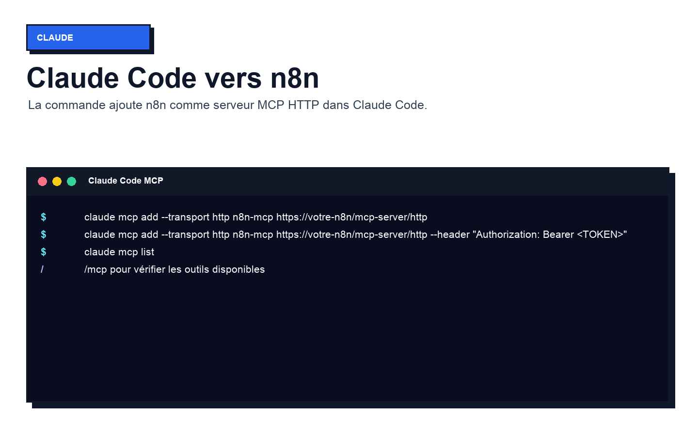
claude mcp add --transport http n8n-mcp https://votre-n8n/mcp-server/http
claude mcp list
/mcpTip terrain
Gardez une preuve avant de continuer : capture, execution, lien, JSON, message d’erreur ou commande copiée proprement.
Claude Code avec token
Si l’endpoint n8n demande un token, le token doit être stocké proprement. Évitez de le mettre dans un support, un README public ou une capture. Une commande peut utiliser un header, mais le secret ne doit pas finir dans Git.
Ce que vous faites
Utilisez une variable d’environnement quand c’est possible. Ne partagez jamais la valeur réelle.
Tip terrain
Gardez une preuve avant de continuer : capture, execution, lien, JSON, message d’erreur ou commande copiée proprement.
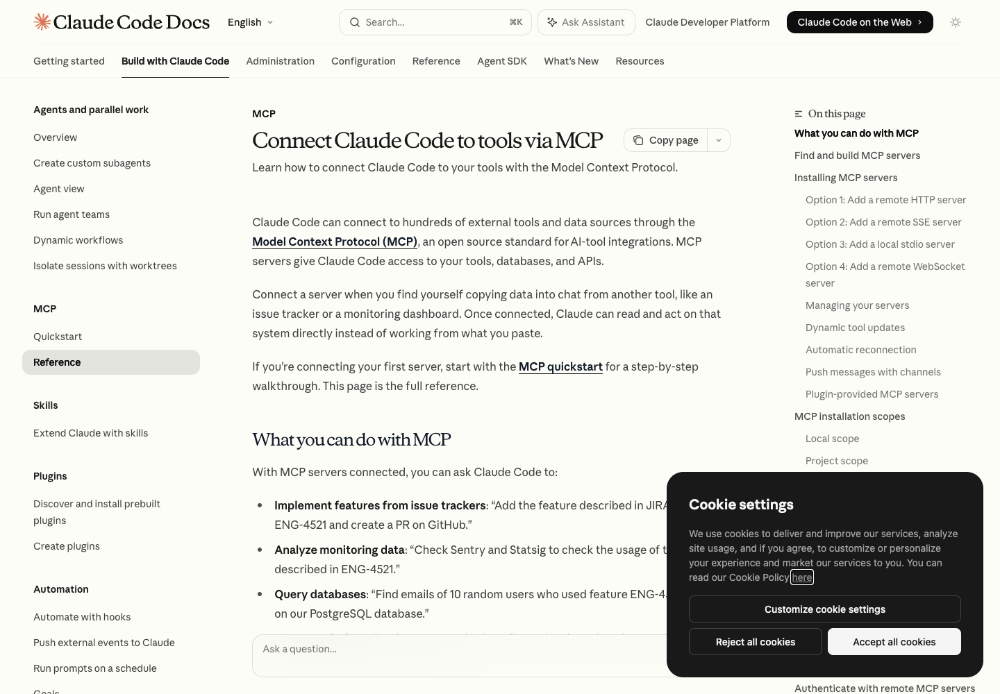
Comment vérifier
La commande documentée montre `<TOKEN>` ou une variable, jamais la clé réelle.
claude mcp add --transport http n8n-mcp https://votre-n8n/mcp-server/http --header "Authorization: Bearer <TOKEN>"Codex comme client MCP
Codex peut aussi utiliser MCP. La documentation OpenAI indique que Codex peut être configuré avec des serveurs MCP, notamment via la configuration ou la commande Codex MCP. Le principe reste le même : donner un outil précis à l’agent.
Comment vérifier
Codex liste le serveur et peut appeler l’outil n8n prévu.
Question à se poser
Quel outil Codex doit-il vraiment appeler ?
codex mcp add n8n-mcp --url https://votre-n8n/mcp-server/http
codex mcp list
/mcp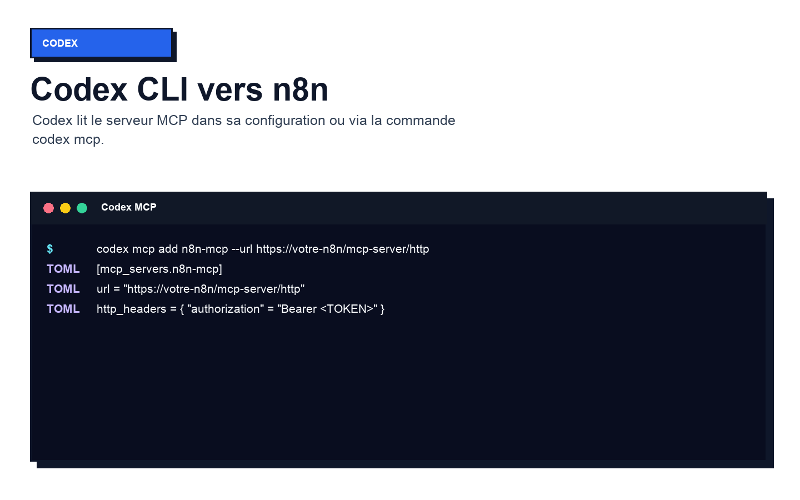
Tip terrain
Gardez une preuve avant de continuer : capture, execution, lien, JSON, message d’erreur ou commande copiée proprement.
Codex et config TOML
La config Codex peut déclarer un serveur MCP. C’est pratique pour garder un réglage stable. Mais un fichier de config partagé ne doit pas contenir de secret réel.
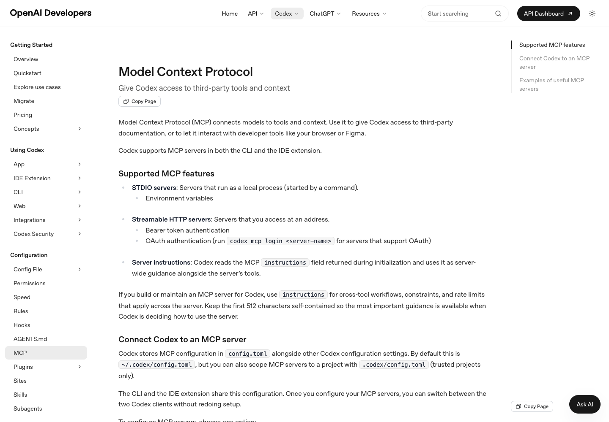
Ce que vous faites
Déclarez l’URL et utilisez un token via variable ou header sécurisé selon votre cas. Si vous mettez un exemple dans Git, remplacez la valeur par un placeholder.
Comment vérifier
Le fichier est lisible et ne contient pas de secret.
Question à se poser
Est-ce un exemple public ou une vraie configuration privée ?
Tip terrain
Gardez une preuve avant de continuer : capture, execution, lien, JSON, message d’erreur ou commande copiée proprement.
[mcp_servers.n8n-mcp]
url = "https://votre-n8n/mcp-server/http"
http_headers = { "authorization" = "Bearer <TOKEN>" }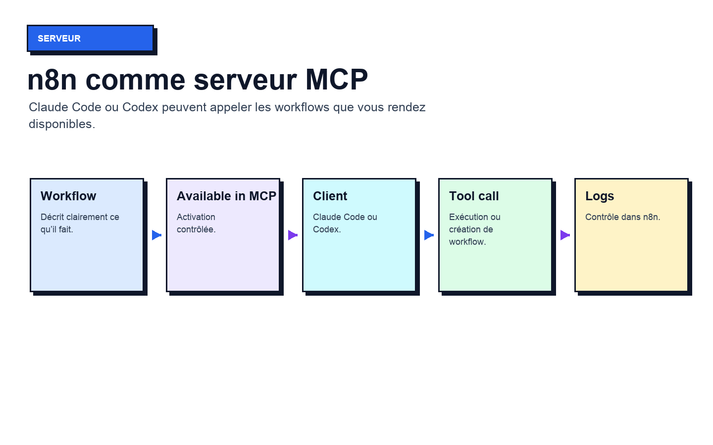
Description des outils MCP
Un outil MCP doit avoir un nom et une description compréhensibles. Si l’agent ne comprend pas l’outil, il peut l’utiliser au mauvais moment. Une bonne description explique l’entrée attendue, l’action et la sortie.
| Pourquoi | Un outil MCP doit avoir un nom et une description compréhensibles. Si l’agent ne comprend pas l’outil, il peut l’utiliser au mauvais moment. Une bonne description explique l’entrée attendue, l’action et la sortie. |
|---|---|
| Action | Décrivez l’outil comme une mini-fiche : `crée une demande interne`, `entrée : nom, email, message`, `sortie : id de la ligne créée`. |
| Vérification | Claude Code ou Codex peut choisir le bon outil sans deviner. |
| Question | Le nom de l’outil dit-il ce qu’il fait vraiment ? |
Dépanner MCP
Les problèmes MCP viennent souvent d’une URL, d’une auth, d’un transport ou d’un outil non exposé. Il faut diagnostiquer dans l’ordre, pas tout changer d’un coup.
Ce que vous faites
Vérifiez l’URL, le transport, le token, la liste d’outils côté client et les executions côté n8n. Corrigez un élément à la fois.
Comment vérifier
Vous savez où le lien casse : client, auth, endpoint ou workflow.
Question à se poser
Est-ce que le client atteint n8n, ou est-ce que n8n refuse l’appel ?
1. URL
2. Auth
3. Transport
4. Outil exposé
5. Execution n8nTip terrain
Gardez une preuve avant de continuer : capture, execution, lien, JSON, message d’erreur ou commande copiée proprement.
API n8n en mots simples
L’API n8n permet à un programme de parler à n8n avec des requêtes HTTP. Elle peut lister, créer, mettre à jour ou activer des workflows selon les endpoints. C’est puissant, donc il faut commencer en lecture avant d’écrire.
Ce que vous faites
Commencez par `GET /api/v1/workflows`. Ne demandez pas tout de suite à un agent de créer ou activer un workflow.
Tip terrain
Gardez une preuve avant de continuer : capture, execution, lien, JSON, message d’erreur ou commande copiée proprement.
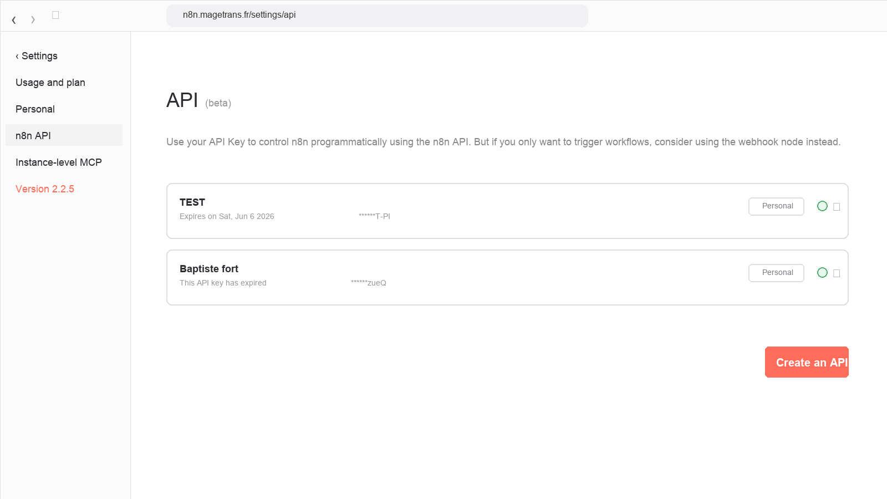
Comment vérifier
La réponse API liste les workflows sans rien modifier.
GET /api/v1/workflows
Header: X-N8N-API-KEYCréer une clé API
La clé API donne l’accès à n8n. Elle doit rester dans un gestionnaire de secrets, une variable d’environnement ou un credential. Elle ne doit jamais être collée dans une conversation publique ou un dépôt.
Comment vérifier
Aucune clé réelle n’apparaît dans le support ou dans Git.
Question à se poser
Qui peut utiliser cette clé, et pour quoi faire ?
export N8N_API_KEY='***'
export N8N_BASE_URL='https://votre-n8n.app.n8n.cloud'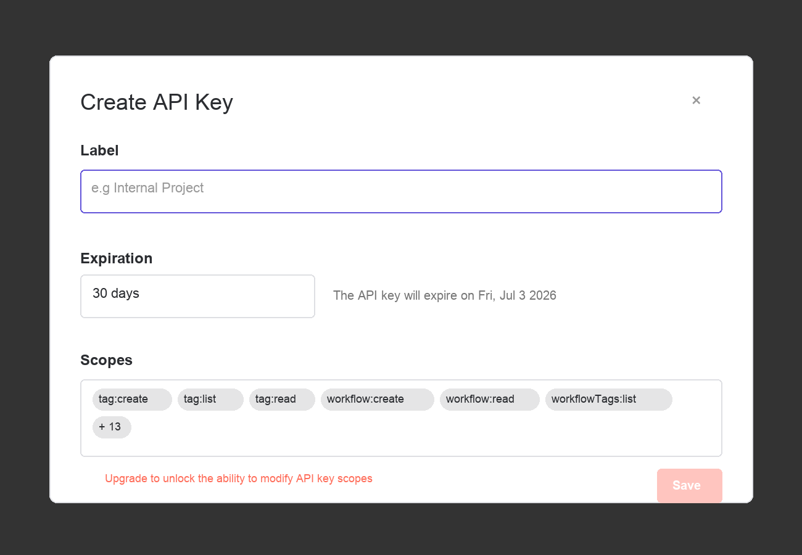
Tip terrain
Gardez une preuve avant de continuer : capture, execution, lien, JSON, message d’erreur ou commande copiée proprement.
Lister les workflows
Lister les workflows est le test le plus sûr. Il vérifie l’URL, la clé et le header sans modifier l’instance. C’est la première commande à faire avant de brancher un agent.
Ce que vous faites
Lancez une commande `curl` de lecture. Si elle échoue, corrigez l’URL ou la clé avant toute création.
Comment vérifier
La commande retourne une liste ou une erreur claire.
Question à se poser
L’agent sait-il lire avant d’écrire ?
Tip terrain
Gardez une preuve avant de continuer : capture, execution, lien, JSON, message d’erreur ou commande copiée proprement.
curl -s "$N8N_BASE_URL/api/v1/workflows" \
-H "X-N8N-API-KEY: $N8N_API_KEY"Créer un workflow
Créer via API demande un JSON valide. Un agent peut aider à produire ce JSON, mais vous devez le relire. Le JSON doit contenir un nom, des nodes, des connections et des settings cohérents.
| Pourquoi | Créer via API demande un JSON valide. Un agent peut aider à produire ce JSON, mais vous devez le relire. Le JSON doit contenir un nom, des nodes, des connections et des settings cohérents. |
|---|---|
| Action | Demandez à Claude Code ou Codex de générer un workflow JSON minimal. Importez-le ou envoyez-le en API seulement après lecture. |
| Vérification | Le workflow créé reste inactif au départ si possible, ou au minimum non connecté à une action sensible. |
| Question | Est-ce que ce JSON peut créer un workflow sans envoyer de message réel ? |
POST /api/v1/workflows
Body: workflow JSON
Relire avant envoiMettre à jour sans casser
Mettre à jour un workflow existant est plus risqué que créer une copie. Une bonne méthode consiste à dupliquer, tester, puis remplacer. Cela évite de casser une automatisation active.
Ce que vous faites
Avant un `PUT`, exportez le workflow actuel ou créez une copie de test. Demandez à l’agent de modifier seulement la copie.
Comment vérifier
Le workflow actif n’est pas modifié sans sauvegarde.
Question à se poser
Est-ce que je peux revenir à la version précédente ?
Tip terrain
Gardez une preuve avant de continuer : capture, execution, lien, JSON, message d’erreur ou commande copiée proprement.
Activer et désactiver
L’activation est l’étape qui transforme un test en automatisation réelle. Elle ne doit pas être confiée à un agent sans garde-fou. Une bonne pratique : création et modification par API, activation manuelle après test.
Ce que vous faites
Gardez l’activation comme étape humaine au début. Quand l’équipe maîtrise, ajoutez une commande d’activation avec validation explicite.
Tip terrain
Gardez une preuve avant de continuer : capture, execution, lien, JSON, message d’erreur ou commande copiée proprement.
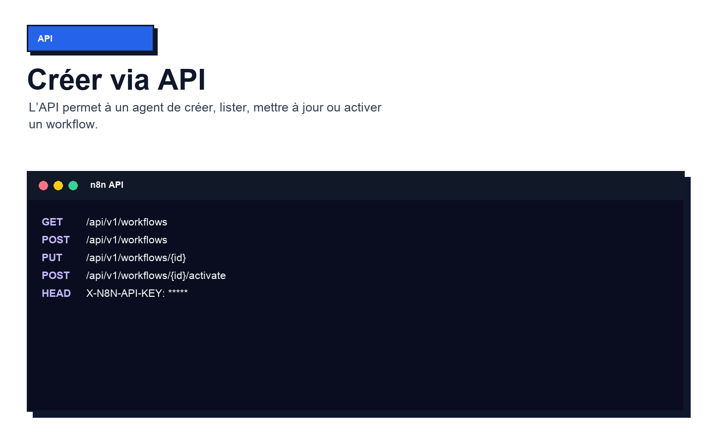
Comment vérifier
Une activation a toujours une execution de test juste avant.
POST /api/v1/workflows/{id}/activate
POST /api/v1/workflows/{id}/deactivateClaude Code génère le JSON
Claude Code est utile pour écrire un workflow JSON, créer un script `deploy_n8n_workflow.sh`, relire la structure et vérifier les champs. Il ne doit pas recevoir une clé API en clair dans le prompt.
Comment vérifier
Le résultat contient un JSON lisible et un script qui ne contient aucun secret.
Question à se poser
Est-ce que Claude Code peut travailler avec un exemple sans voir la vraie clé ?
Lis workflow.example.json.
Génère workflow.lead.json.
Le script doit utiliser $N8N_API_KEY.Tip terrain
Gardez une preuve avant de continuer : capture, execution, lien, JSON, message d’erreur ou commande copiée proprement.
Codex génère le JSON
Codex peut aussi créer ou relire le JSON, écrire un script de déploiement, proposer une checklist et comparer le workflow à la documentation officielle. Le rôle reste le même : produire une base contrôlable.
Ce que vous faites
Demandez à Codex une version en deux fichiers : `workflow.lead.json` et `README-deploiement.md`. La clé reste une variable.
Comment vérifier
Le README explique comment tester sans activer.
Question à se poser
Est-ce que Codex produit une livraison vérifiable, pas seulement du texte ?
Tip terrain
Gardez une preuve avant de continuer : capture, execution, lien, JSON, message d’erreur ou commande copiée proprement.
codex
Crée un workflow JSON n8n minimal.
Ne mets aucun secret dans les fichiers.API ou MCP pour les agents
API et MCP ne répondent pas au même besoin. API : l’agent crée ou modifie n8n directement via HTTP. MCP : l’agent utilise des outils exposés par n8n. Pour créer des workflows, l’API est souvent directe. Pour utiliser un workflow prêt, MCP est plus propre.
| Pourquoi | API et MCP ne répondent pas au même besoin. API : l’agent crée ou modifie n8n directement via HTTP. MCP : l’agent utilise des outils exposés par n8n. Pour créer des workflows, l’API est souvent directe. Pour utiliser un workflow prêt, MCP est plus propre. |
|---|---|
| Action | Choisissez le chemin avant de configurer : création/maintenance = API, appel d’outil = MCP. Si les deux sont nécessaires, gardez deux accès séparés. |
| Vérification | Le choix API/MCP est justifié par le besoin, pas par l’effet de nouveauté. |
| Question | L’agent doit-il construire n8n ou appeler n8n ? |
Test et rollback
Un agent peut aller vite. La sécurité vient du rollback. Export JSON, copie de workflow, désactivation facile, test manuel, trace d’execution. Sans ça, une automatisation peut casser silencieusement.
Ce que vous faites
Avant chaque changement API, exportez ou copiez. Après changement, lancez un test manuel. Si le résultat est mauvais, revenez à la copie.
Comment vérifier
Vous pouvez annuler le changement en moins d’une minute.
Question à se poser
Quelle est ma sortie de secours si l’agent se trompe ?
1. Exporter
2. Modifier copie
3. Tester
4. Activer
5. SurveillerTip terrain
Gardez une preuve avant de continuer : capture, execution, lien, JSON, message d’erreur ou commande copiée proprement.
Nommage des workflows
Un bon nom fait gagner du temps. Il doit dire le déclencheur, l’objet et le résultat. Le nom n’est pas un détail : c’est ce que l’équipe verra dans la liste, les erreurs et les exports.
Ce que vous faites
Utilisez un format simple : `Lead - source - action`. Exemple : `Lead - formulaire site - Slack + CRM`.
Tip terrain
Gardez une preuve avant de continuer : capture, execution, lien, JSON, message d’erreur ou commande copiée proprement.
Comment vérifier
Le nom se comprend sans ouvrir le canvas.
Description et notes
La description raconte le but, les limites et les contacts. Elle évite de dépendre d’une seule personne. Une note courte dans le workflow peut expliquer une branche spéciale.
Comment vérifier
Le workflow peut être repris sans relire toute la séance.
Question à se poser
Quelle information doit rester dans n8n, pas seulement dans votre tête ?
Tip terrain
Gardez une preuve avant de continuer : capture, execution, lien, JSON, message d’erreur ou commande copiée proprement.
Gestion des secrets
Les secrets sont souvent la partie la plus fragile : tokens, API keys, OAuth, webhooks privés. Une fuite peut donner accès à des outils réels. Le support et GitHub ne doivent jamais contenir ces valeurs.
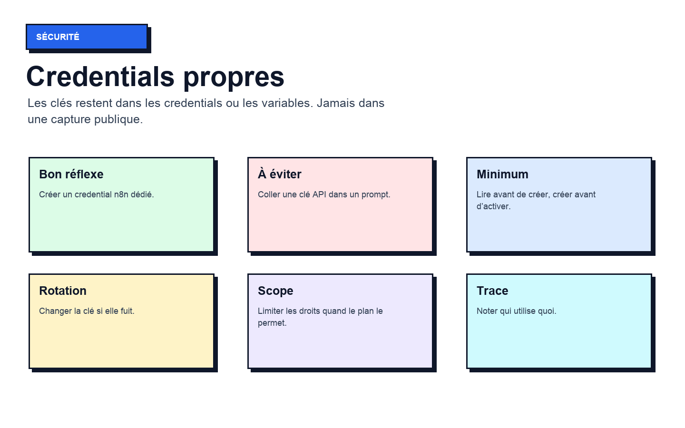
Ce que vous faites
Stockez les secrets dans credentials, variables d’environnement ou gestionnaire de secrets. Remplacez toute valeur dans les exemples par `<TOKEN>`.
Comment vérifier
Un `rg` sur les fichiers ne trouve aucune clé réelle.
Question à se poser
Si le repo devient public, qu’est-ce qui fuit ?
Tip terrain
Gardez une preuve avant de continuer : capture, execution, lien, JSON, message d’erreur ou commande copiée proprement.
rg -n "sk-|api_key|Bearer|N8N_API_KEY" .Workflow d’erreur
Une erreur non vue peut coûter plus cher que l’absence d’automatisation. Un workflow d’erreur informe rapidement la bonne personne, avec le bon contexte.
| Pourquoi | Une erreur non vue peut coûter plus cher que l’absence d’automatisation. Un workflow d’erreur informe rapidement la bonne personne, avec le bon contexte. |
|---|---|
| Action | Créez une notification d’erreur avec workflow, node, message, execution URL et priorité. N’envoyez pas un roman. |
| Vérification | Une erreur test déclenche une alerte compréhensible. |
| Question | Qui doit savoir que le workflow a cassé ? |
Surveiller les executions
Les executions montrent si le workflow tient dans le temps. Au début, regardez-les souvent. Ensuite, gardez une routine : erreurs, durée, volume, données manquantes.
Ce que vous faites
Pendant les premiers jours, vérifiez les executions chaque matin. Notez les erreurs répétées et corrigez la cause, pas seulement le symptôme.
Comment vérifier
Les erreurs répétées diminuent au fil des corrections.
Question à se poser
Quelle erreur revient assez souvent pour mériter une règle ?
Tip terrain
Gardez une preuve avant de continuer : capture, execution, lien, JSON, message d’erreur ou commande copiée proprement.
Limiter le bruit
Une automatisation qui envoie trop d’alertes sera ignorée. La qualité d’une notification vient de sa précision. Mieux vaut une alerte utile qu’une avalanche de messages.
Ce que vous faites
Définissez les cas qui méritent une notification : nouvelle demande, erreur, action sensible, résumé quotidien. Le reste peut rester dans les logs.
Tip terrain
Gardez une preuve avant de continuer : capture, execution, lien, JSON, message d’erreur ou commande copiée proprement.
Comment vérifier
Chaque notification appelle une action claire.
Exporter et versionner
Exporter un workflow en JSON permet de garder une sauvegarde. Git peut ensuite suivre les versions. C’est pratique avant une grosse modification par Codex ou Claude Code.
Comment vérifier
La version précédente est récupérable.
Question à se poser
Pouvez-vous revenir à la version d’hier ?
Tip terrain
Gardez une preuve avant de continuer : capture, execution, lien, JSON, message d’erreur ou commande copiée proprement.
Documenter le passage de relais
Un bon passage de relais explique comment tester, quoi surveiller, où sont les credentials, et quoi ne pas toucher. C’est court, mais cela rend le workflow utilisable par une autre personne.
Ce que vous faites
Créez un README de workflow : but, déclencheur, données attendues, outils touchés, test, rollback.
Comment vérifier
La documentation tient sur une page et répond aux questions pratiques.
Question à se poser
Que doit savoir la prochaine personne avant de cliquer sur Activer ?
Tip terrain
Gardez une preuve avant de continuer : capture, execution, lien, JSON, message d’erreur ou commande copiée proprement.
Routine quotidienne
La routine évite de transformer n8n en usine à gaz. Une tâche répétée devient un workflow seulement si elle est claire, stable, vérifiable et utile. Sinon, elle reste manuelle ou semi-automatique.
| Pourquoi | La routine évite de transformer n8n en usine à gaz. Une tâche répétée devient un workflow seulement si elle est claire, stable, vérifiable et utile. Sinon, elle reste manuelle ou semi-automatique. |
|---|---|
| Action | Pour chaque nouvelle idée, posez cinq questions : déclencheur, donnée, décision, action, preuve. Si une réponse manque, ne construisez pas encore. |
| Vérification | Vous savez refuser une automatisation trop floue. |
| Question | Quel est le déclencheur, quelle donnée arrive, quelle preuve reste ? |
Déclencheur ?
Donnée ?
Décision ?
Action ?
Preuve ?Récapitulatif final
La séance tient en une méthode : comprendre le processus, construire petit, tester chaque node, ajouter l’IA seulement quand elle aide, choisir API ou MCP selon le besoin, puis documenter. Ce parcours suffit pour démarrer proprement avec n8n.
Ce que vous faites
Reprenez le fil rouge et dites ce que fait chaque étape. Si une étape ne se justifie pas, elle doit être simplifiée ou retirée.
Comment vérifier
Vous pouvez créer un premier workflow utile sans partir dans tous les sens.
Question à se poser
Quelle automatisation simple allez-vous tester en premier ?
Tip terrain
Gardez une preuve avant de continuer : capture, execution, lien, JSON, message d’erreur ou commande copiée proprement.
Sources vérifiées le 3 juin 2026